Colibríes de Costa Rica
52 de las 363 especies de colibrí del mundo viven en Costa Rica o lo visitan, entre ellas la Esmeralda Capirotada y la Amazilia de Manglar. 2 de ellas no viven en ningún otro lugar del planeta.
Ver Costa Rica en el explorador
Qué colibríes
Cuántas especies de cada grupo viven en Costa Rica, del total de especies del grupo. El largo de la barra muestra el tamaño del grupo en el mundo.
El grupo más grande aquí: esmeraldas, con 23 especies. Aquí no hay Patagona.
Comparado con otros países
Costa Rica ocupa el lugar 9.º entre los 55 países y territorios con colibríes. Ve cómo se compara Costa Rica con todos los países.
Solo viven en Costa Rica · 2
 Esmeralda CapirotadaMicrochera cupreicepsPreocupación menorFoto: MeegsC · CC BY-SA 3.0
Esmeralda CapirotadaMicrochera cupreicepsPreocupación menorFoto: MeegsC · CC BY-SA 3.0 Amazilia de ManglarChrysuronia boucardiEn peligroFoto: Jorge Obando Nature Photo · CC BY-SA 2.0
Amazilia de ManglarChrysuronia boucardiEn peligroFoto: Jorge Obando Nature Photo · CC BY-SA 2.0


Estado en la Lista Roja
- En peligro 1
- Preocupación menor 50
- Datos insuficientes 1
1 especie está amenazada y 0 están casi amenazadas; 1 de ellas solo vive en Costa Rica.
- Amazilia de ManglarEn peligro · solo en Costa Rica
Tamaños
Desde el Colibrí Centelleante, de 2.2 g, hasta el Picohoz Coliverde, de 10.6 g. La escala abarca toda la familia, de 1.9 a 20.2 g.
Visitantes · 1
Estas especies no se reproducen en Costa Rica: pasan aquí el invierno, lo cruzan durante la migración o aparecen muy de vez en cuando.
- Colibrí Garganta Rubí visitante de invierno
Las 52 especies
Florisuginae topacios · 1
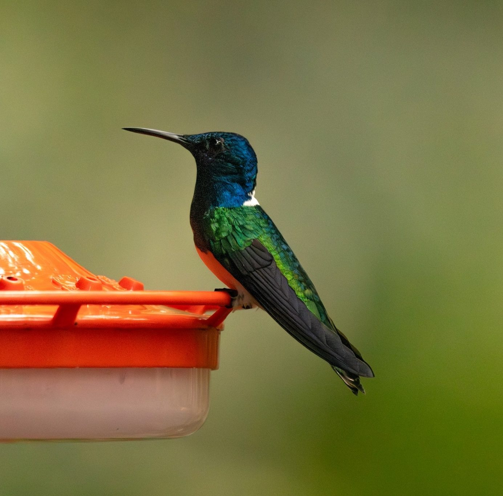
Colibrí Capucha AzulFlorisuga mellivoraPreocupación menorFoto: Lia Guttman · CC BY 4.0
Phaethornithinae ermitaños · 6
 Picohoz ColiverdeEutoxeres aquilaPreocupación menorFoto: José Loiza, Aves y Conservación · Public domain
Picohoz ColiverdeEutoxeres aquilaPreocupación menorFoto: José Loiza, Aves y Conservación · Public domain Ermitaño BronceadoGlaucis aeneusPreocupación menorFoto: Greg from Dahlonega Area, Georgia, USA · CC BY 2.0
Ermitaño BronceadoGlaucis aeneusPreocupación menorFoto: Greg from Dahlonega Area, Georgia, USA · CC BY 2.0 Ermitaño Barbudo ColibandeadoThrenetes ruckeriPreocupación menorFoto: Michael Woodruff from Spokane, Washington, USA · CC BY-SA 2.0
Ermitaño Barbudo ColibandeadoThrenetes ruckeriPreocupación menorFoto: Michael Woodruff from Spokane, Washington, USA · CC BY-SA 2.0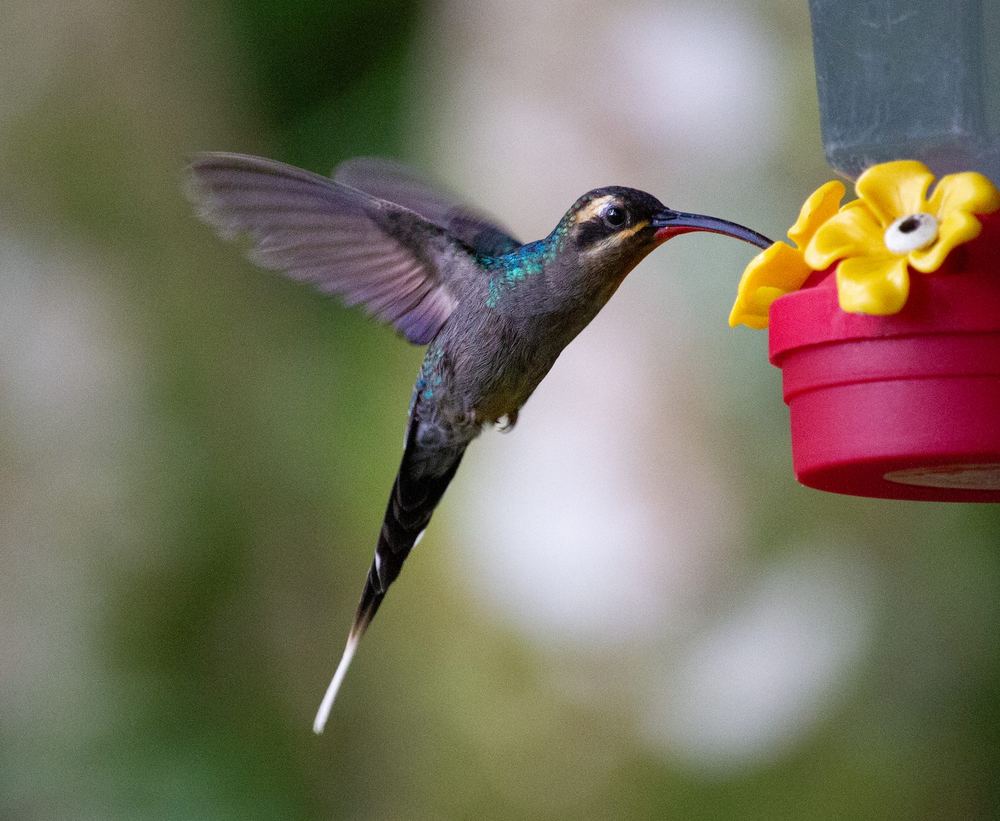
Ermitaño VerdePhaethornis guyPreocupación menorFoto: Lia Guttman · CC BY 4.0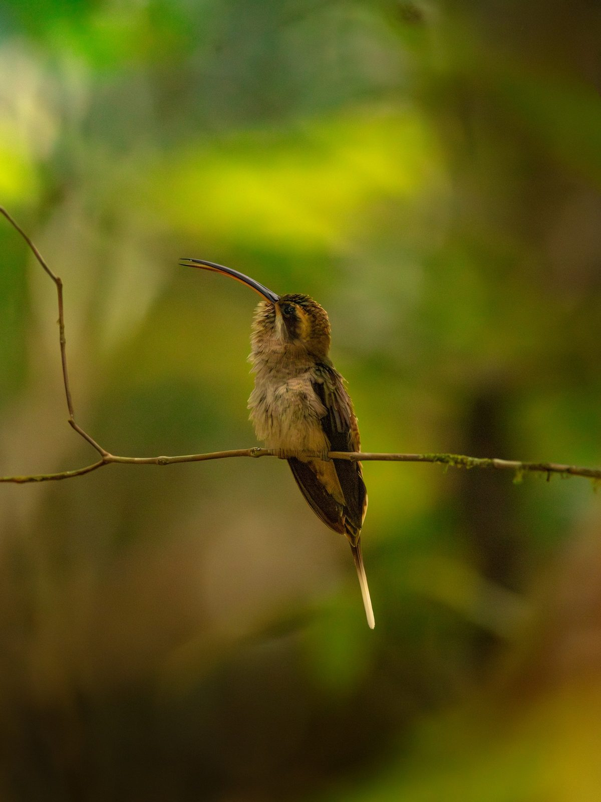
Colibrí Ermitaño MesoamericanoPhaethornis longirostrisPreocupación menorFoto: Lia Guttman · CC BY 4.0 Colibrí Ermitaño EnanoPhaethornis striigularisPreocupación menorFoto: Jerry Oldenettel from Socorro, NM, USA · CC BY-SA 2.0
Colibrí Ermitaño EnanoPhaethornis striigularisPreocupación menorFoto: Jerry Oldenettel from Socorro, NM, USA · CC BY-SA 2.0

_(cropped).jpg){kind=link}
.jpg){kind=link}

Polytminae mangos · 6
 Colibrí Picolanza MayorDoryfera ludovicaePreocupación menorFoto: thibaudaronson · CC BY-SA 4.0
Colibrí Picolanza MayorDoryfera ludovicaePreocupación menorFoto: thibaudaronson · CC BY-SA 4.0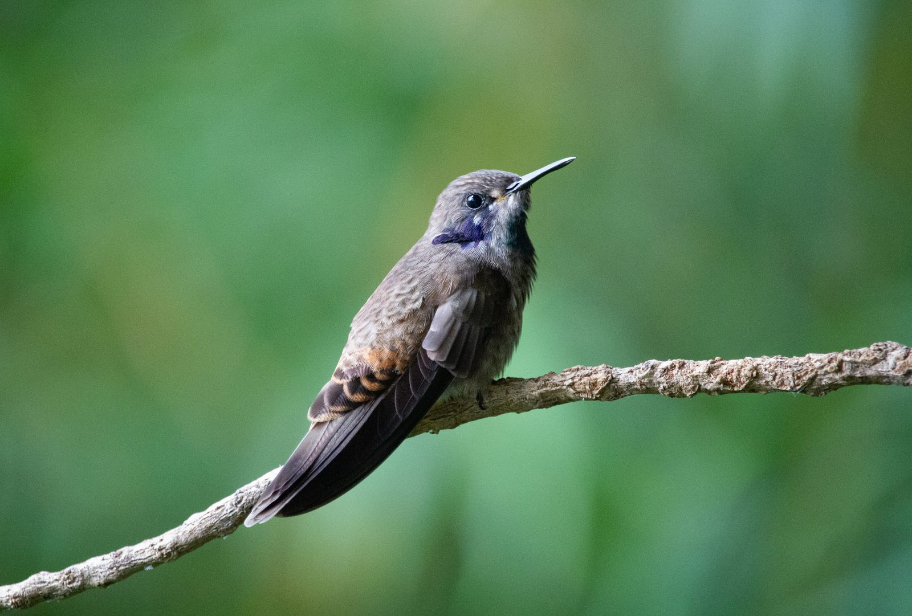
Colibrí PardoColibri delphinaePreocupación menorFoto: Lia Guttman · CC BY 4.0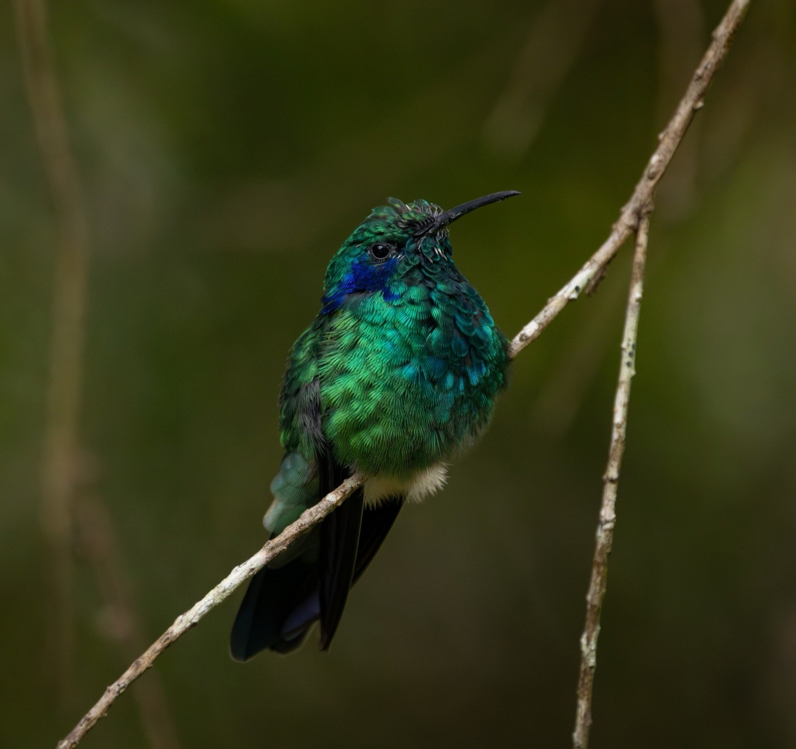
Colibrí Orejas Violetas MenorColibri cyanotusPreocupación menorFoto: Lia Guttman · CC BY 4.0 Colibrí Hada EnmascaradaHeliothryx barrotiPreocupación menorFoto: MeegsC · CC BY-SA 3.0
Colibrí Hada EnmascaradaHeliothryx barrotiPreocupación menorFoto: MeegsC · CC BY-SA 3.0 Colibrí Garganta NegraAnthracothorax prevostiiPreocupación menorFoto: Dick Daniels (http://theworldbirds.org/) · CC BY-SA 3.0
Colibrí Garganta NegraAnthracothorax prevostiiPreocupación menorFoto: Dick Daniels (http://theworldbirds.org/) · CC BY-SA 3.0 Mango de VeraguaAnthracothorax veraguensisPreocupación menorFoto: desertnaturalist · CC BY 4.0
Mango de VeraguaAnthracothorax veraguensisPreocupación menorFoto: desertnaturalist · CC BY 4.0
.jpg){kind=link}

RWD.jpg){kind=link}

Lesbiini coquetas · 4
 Rabudito VerdeDiscosura conversiiPreocupación menorFoto: Cephas · CC BY-SA 4.0
Rabudito VerdeDiscosura conversiiPreocupación menorFoto: Cephas · CC BY-SA 4.0 Coqueta CrestirrufaLophornis delattreiPreocupación menorFoto: Francesco Veronesi from Italy · CC BY-SA 2.0
Coqueta CrestirrufaLophornis delattreiPreocupación menorFoto: Francesco Veronesi from Italy · CC BY-SA 2.0 Coqueta Cresta NegraLophornis helenaePreocupación menorFoto: Roger MacKertich · CC BY-SA 4.0
Coqueta Cresta NegraLophornis helenaePreocupación menorFoto: Roger MacKertich · CC BY-SA 4.0 Coqueta AdorableLophornis adorabilisPreocupación menorFoto: Feroze Omardeen · CC BY 2.0
Coqueta AdorableLophornis adorabilisPreocupación menorFoto: Feroze Omardeen · CC BY 2.0


.jpg){kind=link}
Heliantheini brillantes · 1
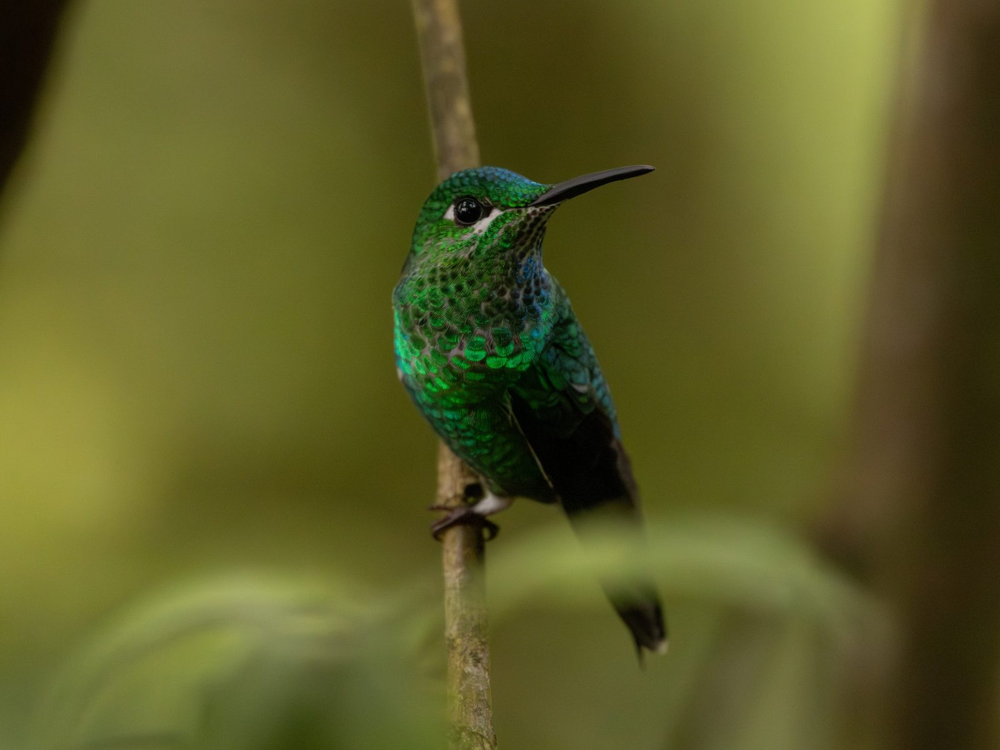
Brillante CoroniverdeHeliodoxa jaculaPreocupación menorFoto: Lia Guttman · CC BY 4.0
Lampornithini mountain gems · 7
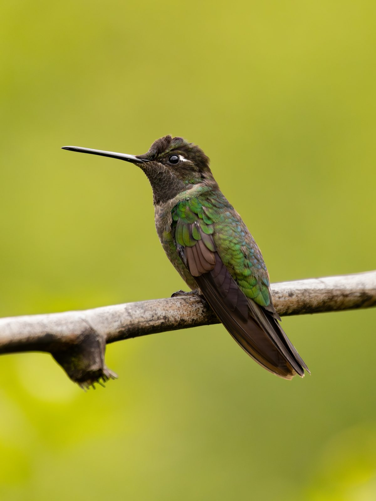
Colibrí de TalamancaEugenes spectabilisPreocupación menorFoto: Lia Guttman · CC BY 4.0 Colibrí Picudo CoroniazulHeliomaster longirostrisPreocupación menorFoto: Charles J. Sharp · CC BY-SA 4.0
Colibrí Picudo CoroniazulHeliomaster longirostrisPreocupación menorFoto: Charles J. Sharp · CC BY-SA 4.0 Colibrí Picudo OccidentalHeliomaster constantiiPreocupación menorFoto: Jerry Oldenettel · CC BY-SA 2.0
Colibrí Picudo OccidentalHeliomaster constantiiPreocupación menorFoto: Jerry Oldenettel · CC BY-SA 2.0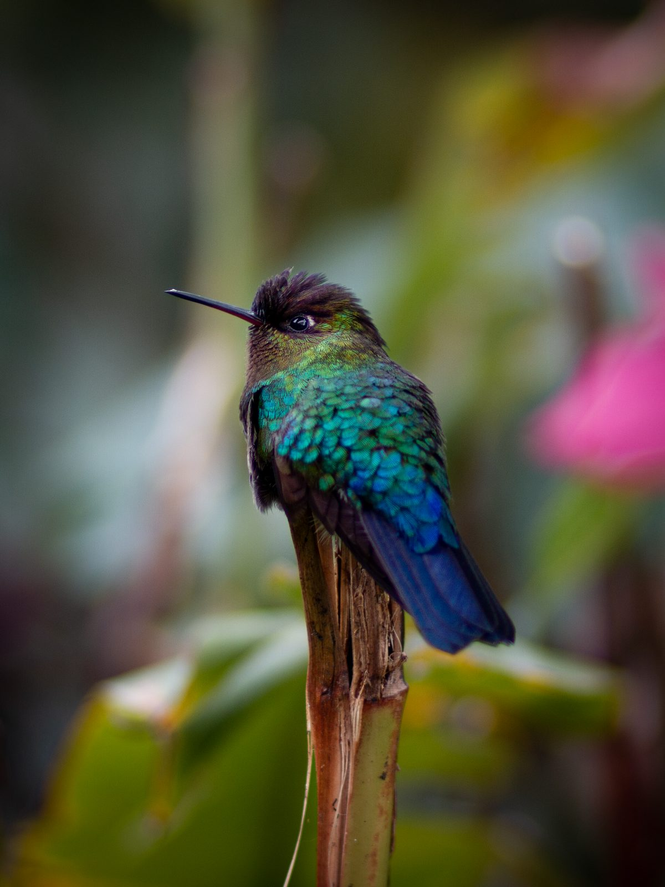
Colibrí InsignePanterpe insignisPreocupación menorFoto: Lia Guttman · CC BY 4.0 Colibrí GorjivioletaLampornis hemileucusPreocupación menorFoto: Michael Woodruff from Spokane, Washington, USA · CC BY-SA 2.0
Colibrí GorjivioletaLampornis hemileucusPreocupación menorFoto: Michael Woodruff from Spokane, Washington, USA · CC BY-SA 2.0 Colibrí GorjipúrpuraLampornis calolaemusPreocupación menorFoto: Cephas · CC BY-SA 4.0
Colibrí GorjipúrpuraLampornis calolaemusPreocupación menorFoto: Cephas · CC BY-SA 4.0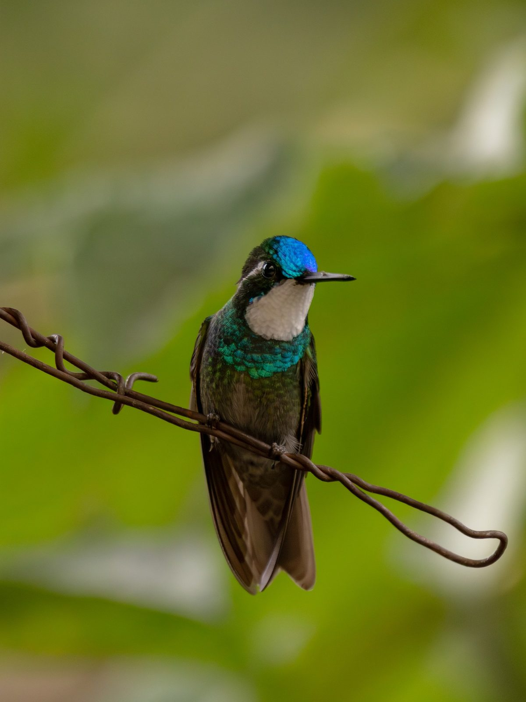
Colibrí VentricastañoLampornis castaneoventrisPreocupación menorFoto: Lia Guttman · CC BY 4.0
.jpg){kind=link}

.jpg){kind=link}

Mellisugini abejas · 4
 Colibrí MagentaPhilodice bryantaePreocupación menorFoto: Basar · CC BY-SA 3.0
Colibrí MagentaPhilodice bryantaePreocupación menorFoto: Basar · CC BY-SA 3.0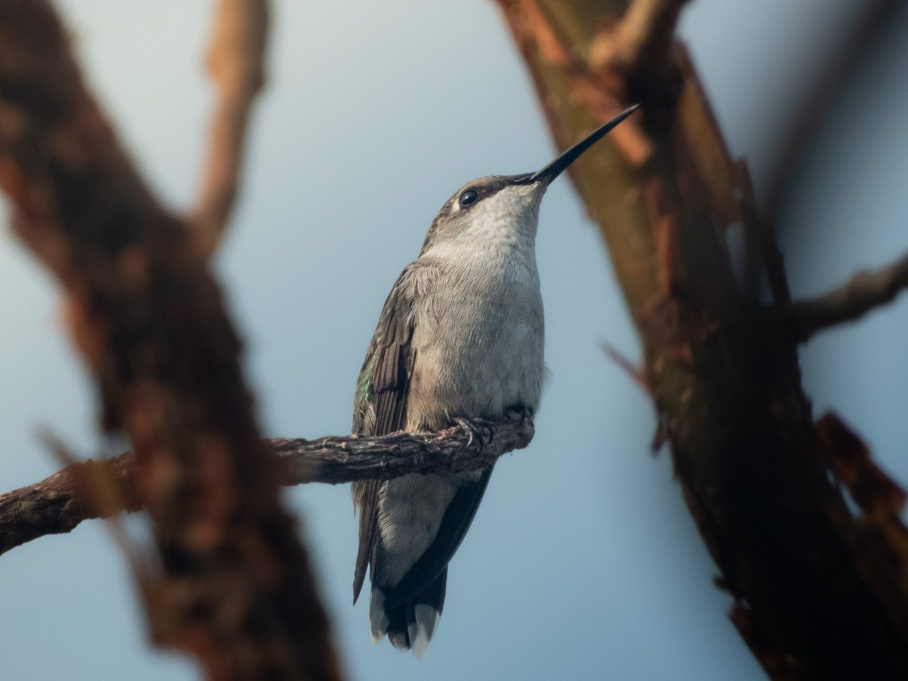
Colibrí Garganta RubíArchilochus colubrisvisitante de inviernoPreocupación menorFoto: Lia Guttman · CC BY 4.0 Colibrí VolcaneroSelasphorus flammulaPreocupación menorFoto: Jerry Oldenettel from Socorro, NM, USA · CC BY-SA 2.0
Colibrí VolcaneroSelasphorus flammulaPreocupación menorFoto: Jerry Oldenettel from Socorro, NM, USA · CC BY-SA 2.0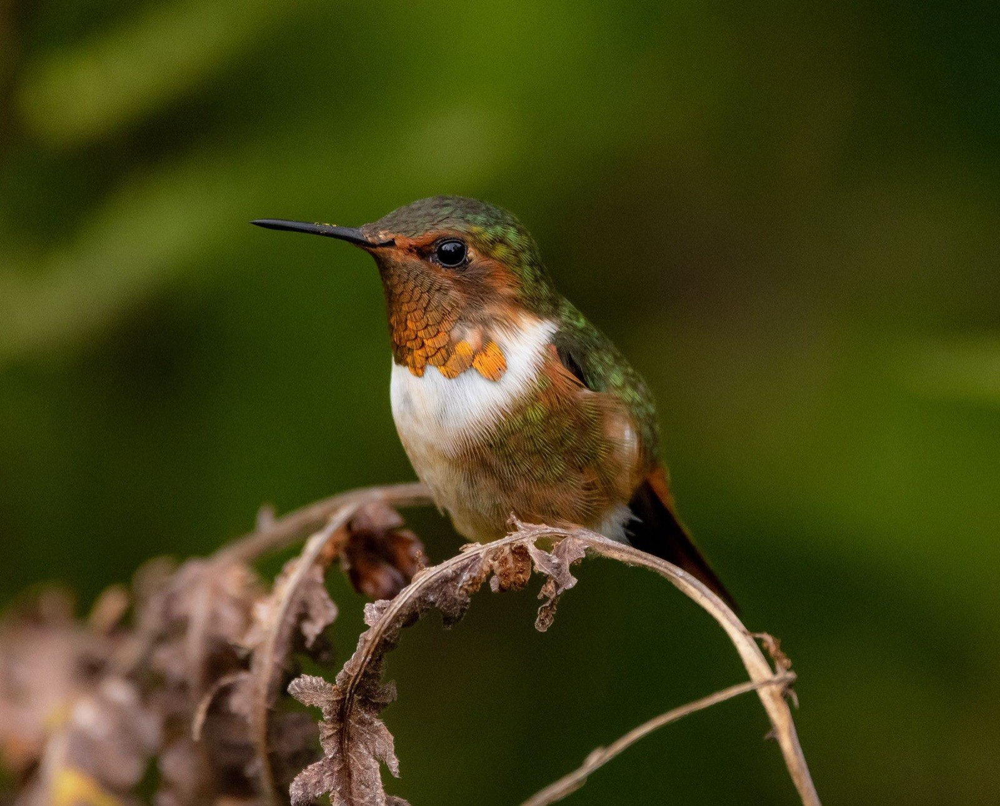
Colibrí CentelleanteSelasphorus scintillaPreocupación menorFoto: Lia Guttman · CC BY 4.0


Trochilini esmeraldas · 23
 Esmeralda OrientalCynanthus canivetiiPreocupación menorFoto: Brian Gratwicke · CC BY 2.0
Esmeralda OrientalCynanthus canivetiiPreocupación menorFoto: Brian Gratwicke · CC BY 2.0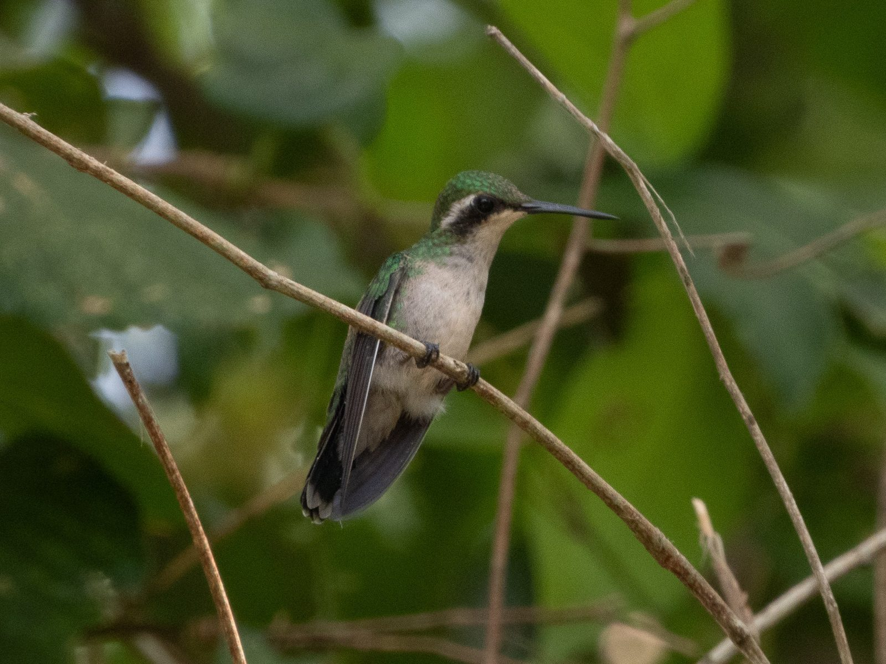
Esmeralda AfínChlorostilbon assimilisPreocupación menorFoto: Lia Guttman · CC BY 4.0 Colibrí CabeciazulKlais guimetiPreocupación menorFoto: lwolfartist · CC BY 2.0
Colibrí CabeciazulKlais guimetiPreocupación menorFoto: lwolfartist · CC BY 2.0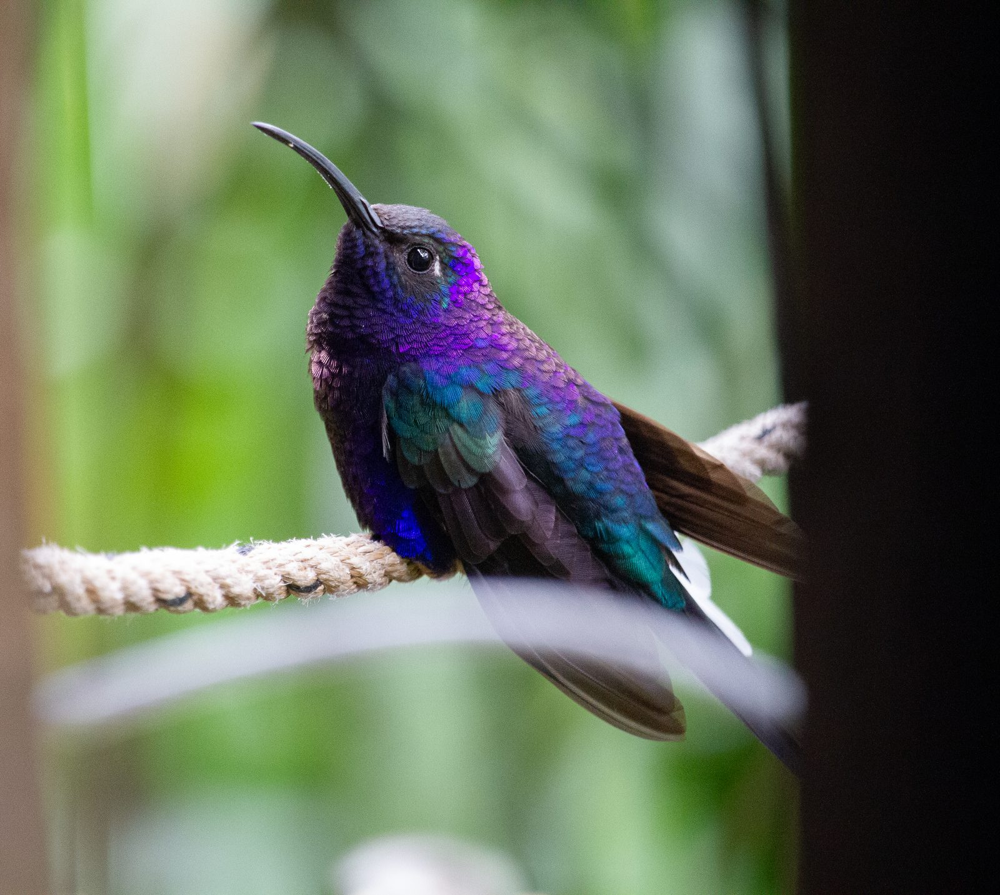
Fandanguero MoradoCampylopterus hemileucurusPreocupación menorFoto: Lia Guttman · CC BY 4.0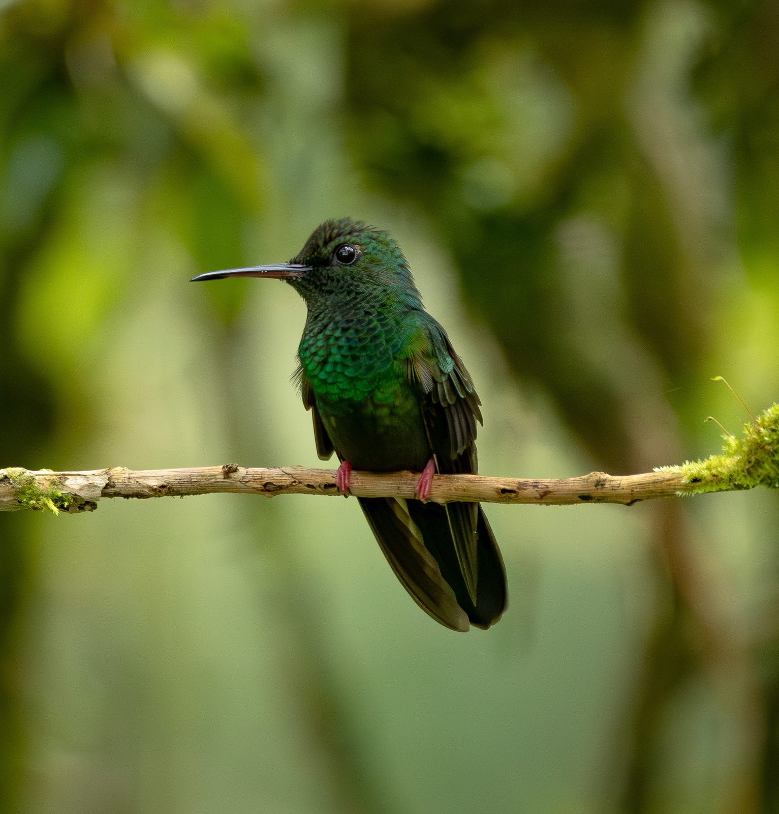
Colibrí PatirrojoChalybura urochrysiaPreocupación menorFoto: Lia Guttman · CC BY 4.0 Zafiro CoronadoThalurania colombicaPreocupación menorFoto: Joseph C Boone · CC BY-SA 4.0
Zafiro CoronadoThalurania colombicaPreocupación menorFoto: Joseph C Boone · CC BY-SA 4.0 Colibrí CoroniblancoMicrochera albocoronataPreocupación menorFoto: Michael Woodruff from Spokane, Washington, USA · CC BY-SA 2.0
Colibrí CoroniblancoMicrochera albocoronataPreocupación menorFoto: Michael Woodruff from Spokane, Washington, USA · CC BY-SA 2.0- Esmeralda CapirotadaMicrochera cupreicepssolo aquíPreocupación menorFoto: MeegsC · CC BY-SA 3.0
 Esmeralda de ElviraMicrochera chionuraPreocupación menorFoto: noverholtz · CC BY-SA 4.0
Esmeralda de ElviraMicrochera chionuraPreocupación menorFoto: noverholtz · CC BY-SA 4.0 Colibrí Cola RayadaEupherusa eximiaPreocupación menorFoto: Basar · CC BY-SA 3.0
Colibrí Cola RayadaEupherusa eximiaPreocupación menorFoto: Basar · CC BY-SA 3.0 Colibrí VentrinegroEupherusa nigriventrisPreocupación menorFoto: Francesco Veronesi from Italy · CC BY-SA 2.0
Colibrí VentrinegroEupherusa nigriventrisPreocupación menorFoto: Francesco Veronesi from Italy · CC BY-SA 2.0 Colibrí Pecho EscamosoPhaeochroa cuvieriiPreocupación menorFoto: Francesco Veronesi from Italy · CC BY-SA 2.0
Colibrí Pecho EscamosoPhaeochroa cuvieriiPreocupación menorFoto: Francesco Veronesi from Italy · CC BY-SA 2.0 Amazilia AzulSaucerottia hoffmanniNo evaluadoFoto: Rajan Rao · CC BY 4.0
Amazilia AzulSaucerottia hoffmanniNo evaluadoFoto: Rajan Rao · CC BY 4.0 Colibrí Cola AzulSaucerottia cyanuraPreocupación menorFoto: Hectonichus · CC BY-SA 4.0
Colibrí Cola AzulSaucerottia cyanuraPreocupación menorFoto: Hectonichus · CC BY-SA 4.0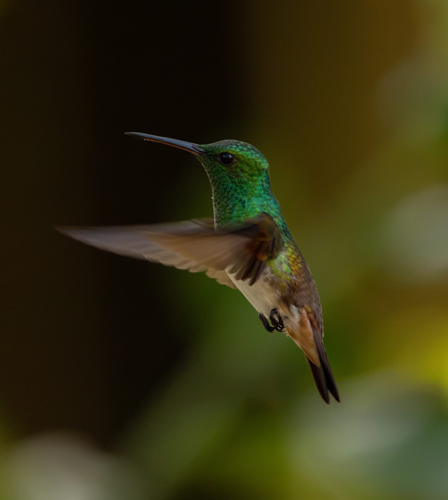
Amazilia de EdwardSaucerottia edwardPreocupación menorFoto: Irving Peres · CC BY 4.0 Colibrí CaneloAmazilia rutilaPreocupación menorFoto: Charles J. Sharp · CC BY-SA 4.0
Colibrí CaneloAmazilia rutilaPreocupación menorFoto: Charles J. Sharp · CC BY-SA 4.0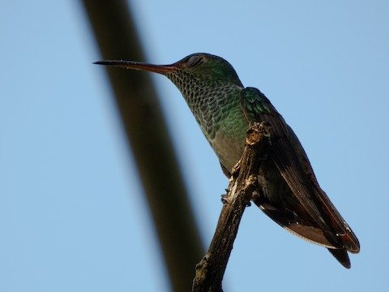
Colibrí Cola CanelaAmazilia tzacatlPreocupación menorFoto: Lia Guttman · CC BY 4.0- Amazilia de ManglarChrysuronia boucardisolo aquíEn peligroFoto: Jorge Obando Nature Photo · CC BY-SA 2.0
 Colibrí GorjizafiroChrysuronia coeruleogularisPreocupación menorFoto: Charles J. Sharp · CC BY-SA 4.0
Colibrí GorjizafiroChrysuronia coeruleogularisPreocupación menorFoto: Charles J. Sharp · CC BY-SA 4.0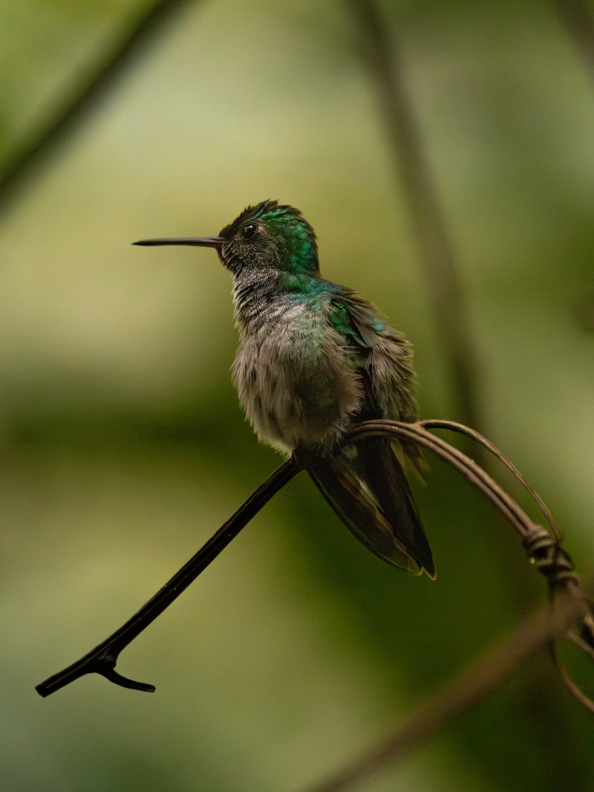
Amazilia AmablePolyerata amabilisPreocupación menorFoto: Lia Guttman · CC BY 4.0 Amazilia EncantadoraPolyerata decoraPreocupación menorFoto: João Carlos Ribeiro Martins · CC BY 2.0
Amazilia EncantadoraPolyerata decoraPreocupación menorFoto: João Carlos Ribeiro Martins · CC BY 2.0 Colibrí CándidoChlorestes candidaPreocupación menorFoto: Charles J. Sharp · CC BY-SA 4.0
Colibrí CándidoChlorestes candidaPreocupación menorFoto: Charles J. Sharp · CC BY-SA 4.0 Zafiro Garganta AzulChlorestes eliciaePreocupación menorFoto: Roger MacKertich · CC BY-SA 4.0
Zafiro Garganta AzulChlorestes eliciaePreocupación menorFoto: Roger MacKertich · CC BY-SA 4.0


_JCB.jpg){kind=link}
.jpg){kind=link}


.jpg){kind=link}
.jpg){kind=link}

_in_flight_Los_Tarrales.jpg){kind=link}
_male.jpg){kind=link}
.jpg){kind=link}
_in_flight_Peten.jpg){kind=link}

Fuentes
Países y cómo usa cada especie cada país: BirdLife International DataZone, comparado con registros de eBird a través de GBIF. El conteo incluye todas las especies de la lista del país, como el mapa del explorador. Grupos: Dickinson y Remsen (2013) y McGuire et al. (2014). Peso: AVONET (Tobias et al. 2022, CC BY 4.0). Estado en la Lista Roja: BirdLife International, la autoridad de la Lista Roja de la UICN para las aves.